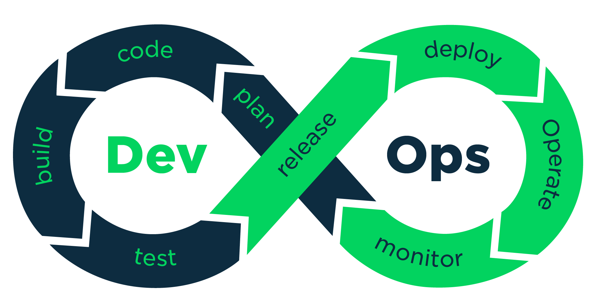

Familiarizing with different DevOps tools including Git, Junit, Jenkins, Ansible and to create a Maven web application and make it deployed under a DevOps pipeline which make it adaptable, flexible and agile to changes.